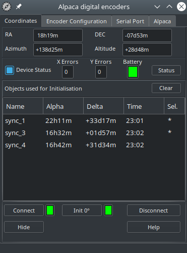
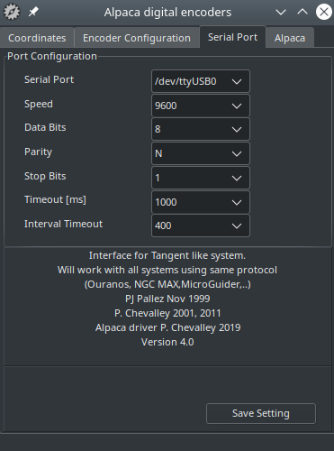

Alpaca Encoder telescope driver
This driver can be used with encoder box using the Tangent protocol like
the Ouranos , AAM or NGC-MAX box.
It use a floating two stars alignment method based on the article by Toshimi Taki in February 1989 S&T.
The Alpaca server is embedded in this driver, allowing to connect client application such planetarium
using the ASCOM Remote Client, or by using the internal Alpaca client feature of the application.
Please refer to the manufacturer information to connect the encoder controler
to the computer.
Then start the program alpaca_encoder. The following window
is displayed :

For the first time use you need to provide some configuration
information.
Click the "Connect button", the light must change to green
and the encoder count are displayed at the top of the screen.
Perform the following alignment procedure :
- If you select 90 degree initialization :
- point the telescope vertically for an altaz mount or parallel
to the polar axis for an equatorial mount. It is important to understand
that you must not point to the real zenith or pole but to the direction
of your mount axis. Use of a fixed graduated circle or a stop piece
can be of great help, see also the discussion about the Z3
parameter below.
- Click the "Init 90°" button.
- If you select 0 degree initialization :
- point the telescope horizontally for an altaz mount or perpendicular
to the polar axis for an equatorial mount. The above note also apply
in this case.
- Click the "Init 0°" button.
- Point the telescope to a star, use a reticle eyepiece and enough power
to precisely center the star.
- From the planetarium application, select this star and Sync to the telescope driver.
- Repeat the procedure for a second star. Beware to choice a star with
enough difference along the both axis from the first star.
The position of the telescope is now displayed using equatorial and azimuthal coordinates.
After you move to another posiiton in the sky you can refine the local precision by sending again a Sync for a new star.
You are not limited with the number of initialization stars. The program always use the best pair to compute the telescope position.
The couple of star used for the part of the sky the telescope is actually pointed is marked by a '*'.
The Clear button delete all the stars in the initialization list and
return the interface in unitialized mode.
A mouse right click in the list allow to delete only one star from the
list.
If you send a new Sync at the same position, the new coordinates replace the previous point.
If your encoder controler return status information this can be indicated just below the coordinates.
Main cause of error
Sometime the position show on the chart is not the one you observe in
the telescope, there is many cause of possible error here is a short list:
- Configuration error :
- Encoder steps number is incorrectly set. You can get this error principally if you gear
the encoder. To find the real value, use a full mount rotation with a fixed remote reference to count the exact number.
- Mount fabrication error is not set.
- Missmatch between azimuthal and equatorial mount.
- The precision for a two stars alignment is dependent of a precise
first direction initialization (init at 0 or 90 degree). You can use the Z3 parameter to correct a systematic
error. There is however no need for a precise polar alignment or mount leveling.
- Unadapted reference stars, the first two alignment stars must have
enough difference along the two axis and be far enough in the sky.
- Also avoid to select an alignement star in the direction of the polar
axis, Polaris is good for an azimuthal mount but not for an equatorial.
- Missing encoder count by the controler box, this may occure if you
move the mount too rapidly or if the battery is low.
- Misidentification of a reference star.
Interface configuration

Select the encoder type you use, if your model is not listed consult your
documentation to find a compatible model, if you find none select the
generic Tangent model.
Set the encoder count for a full rotation for both axis.
The read interval is the amount of time that elapse between two position
query to the interface box. Use a smaller value for a smoother cursor
movement if your controler box accept higher trafic.
Use a bigger value to use less computer ressource or if your interface
box as a limited output rate.
Check the mount type (equatorial or Alt-Az) you use and if you prefere
to do the first initialization vertically (90°) or horizontally (0°).
The mount fabrication error angle Z1, Z2, Z3 in degree
are the one defined in Taki article :
Z1 is the amount by which the elevation axis is offset from the perpendicular to the horizontal axis.
Z2 is the pointing error of the telescope optical axis in the same plane.
Z3 can be considered a correction to the zero setting of the elevation circle.
Mesuring Z1 and Z2 can be a difficult task, but Z3 can be of great interest to help to initialize the mount.
As an example imagine your Dobson mount as a security stop 5 degrees above
the horizon to avoid to flip the primary mirror. You can set Z3=5 and
check the initialization at 0 degree. To initialize the mount simply put
the telescope horizontally to the security stop and click the "Init
0°" button, that's all.
You can imagine the same if the stop is 15 degrees after the zenith but
in this case use the "Init 90°" button.
You need to set the observatory coordinates. This can also be send by the planetarium using the Alpaca interface.
In the case of problem with the interface you can trace the protocol
to a file by checking "Record protocol to a trace file".
The last check box let you choice if you want this window always visible
at the top of the other.
Communication port configuration

Select the serial port (COM, tty, or other) where the telescope is connected.
Set other options (speed, data, parity and stop) according to the manufacturer informations.
Change the timeout values only if you encounter communication problem
and after identifying the problem with the trace file. Do not set the
timeout to a value greater than the refresh rate in the preceding screen.
Click the Save Setting button to keep your configuration for the next
run.
Intelliscope support
Orion Intelliscope support was added by Gary Carpenter
Intelliscope proceedure is :
- Set up Port Configuration
- 9600,8,N,1
- Timeout 1000 mS
- Interval Timeout 1000mS
- Set up encoder configuration
- Type Intelliscope
- Steps for Alpha 9216
- Steps for Delta 9216
- Read Interval 1000 ( other values may work too )
- Mount Type Alt-Az
- Encoder Init Angle 90
- Turn on Intelliscope, and press enter at least once.
- Note 1: You can go through the alignment proceedure for the Intelliscope or not, the alignment of this driver is independent of the Intelliscope)
- Note 2: You must press a key on the Intelliscope once in every 15 mins or it will goto sleep, and you will have to reallign! )
- Press connect and follow the normal vertical initialization and two star alignment.
Alpaca interface configuration

This configure the internal Alpaca server that manage the communication with the client.
Set the IP address and port the server will listen on. It is best to set the port higher than 10000 to prevent any system restriction on lower values.
You can use the IP of the network interface the client computer is connected on, or one of the following special IP address:
0.0.0.0 : Make the server to listen on all the available network interface.
127.0.0.1 : Listen only on the internal loopback interface, no other computer can connect to the server.
You need to restart the program to apply this change because the server is only restarted with the program.
Below is the server status, it show the port actually in use. Beware this can be different than the configured port if it cannot be used, in this casee the reason is show in the log.
Error message are always logged. You can check "Show trace" to see the detail of the communication by the Alpaca server.
|